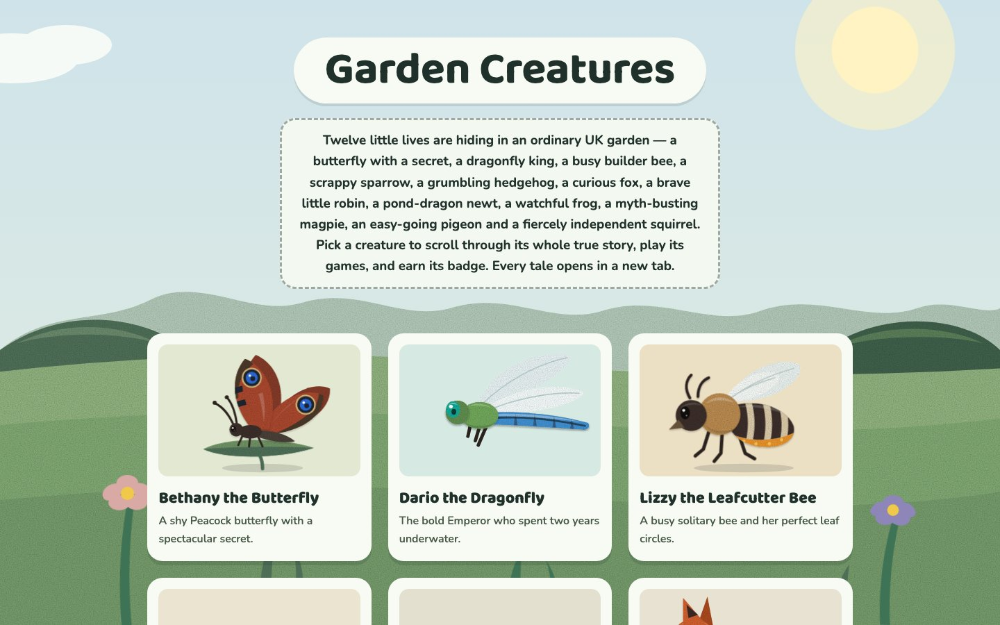

I use AI tools to get from a concept to something that works, so I can test an idea against real behaviour and not argue about it in a deck.
2026
Founder and Principal Designer at VIXU Design, my own practice.
Tools I use daily
Claude, Claude Code, Cursor, Copilot and Gemini, alongside Figma.
What I have not done
I have built agentic systems. I have not yet shipped an agentic feature to customers inside a product.
A wildlife site for schools, built on my own
This is an interactive educational website about the creatures in UK gardens, made to be introduced into UK schools. I did all of it. That covers the concept, the content structure, the interaction design, the visual design and the front-end code.
I built it with large language models and agentic coding tools. I shipped the front end myself.
Add two or three decisions here. For example, a point where the model's output was wrong and you redesigned around it, how you tested it with children or teachers, and what you would change.
There are no measured results yet. It is live at (address to add).
Garden wildlife site, home

Garden wildlife site, mobile
Image to addA creature page on a phone.
Working file
Image to addThe Figma file or the build in progress. This is the frame a craft interviewer will ask to open.
An agent that tracked competitor card offers
At Expedia Group I built a working prototype of an agent in 2025. It retrieved the latest credit card offers from competitors in the US market. It fed them into a newsletter that kept senior leaders up to date, and it linked through to the competitors' offer designs so the design teams could learn from them. I rebuilt it in 2026, and the case study covers that.
Where people stayed in the loop
Chose
We had to verify every offer it found, and the review of the offer designs was always done by the team.
Why
A wrong offer in front of senior leaders would have cost the report its credibility. I think the point where people stay in the loop is the most important decision in a system like this.
This was competitive intelligence. It did not buy anything or act for a customer.
Agent output
Image to addThe newsletter the agent fed, with any confidential detail removed.
AI concepts for a live product
I put forward concepts for the One Key credit card page. One was a points calculator that forecast a traveller's earnings from their own past trips and spend. Another was a chatbot as an alternative to the credit card FAQs.
On the card offers, AI let the team produce nine design variants in a day where it used to take a week. That was enough to run them as a bandit test.
Points calculator concept
Image to addThe calculator concept for the card page.
Bringing it into a team
I brought AI into my team's everyday practice at Expedia Group. We used it for ideation, prototyping, research synthesis and reporting. I ran the learning sessions that got people using it and set the norms for how we used it.
I spoke about AI at Expedia's London design event twice. In 2023 I gave a live demo of ChatGPT. In 2025 I gave a talk on where the field had come from, starting with MYCIN, an early expert system I studied at university.
Lightning talk
Image to addA slide or a photo from the 2025 talk.
Other work this year
I produced initial concepts for a care home provider. The design problem is helping families through a sensitive decision that depends on trust.
I also design and build portfolio sites for people who work in tech. This site is one of them.